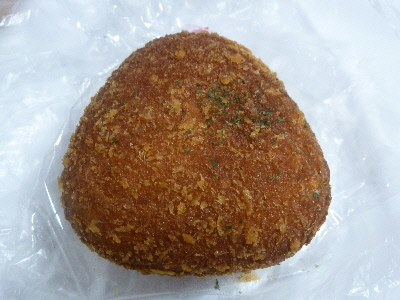
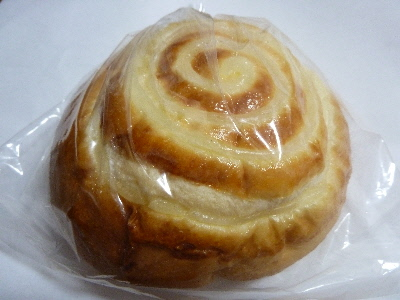

トライアルの明太子チーズドーナッツ
更新日 : 2017/11/15
三角形でおにぎりみたいな形ですね。

ドーナッツの中には大きな空洞があって、そこに明太ソースとチーズが入っていました。
明太チーズって美味しいって思うんですけど、お互いに味を消しあってるなって思いました。
消しあってると思うとなんかもったいないですね。
島根県出雲市白枝町420-1
更新日 : 2017/11/15
三角形でおにぎりみたいな形ですね。

ドーナッツの中には大きな空洞があって、そこに明太ソースとチーズが入っていました。
明太チーズって美味しいって思うんですけど、お互いに味を消しあってるなって思いました。
消しあってると思うとなんかもったいないですね。
更新日 : 2017/09/13
トライアルで大きいパンが販売していました。

なんて名前か分かりません。
夕方買に行ったらパンが整理されてて、まとめて置いてあったの商品名がよくわかりませんでした。
味的にカマンベールがヨーグルトです。
白い渦巻状のところが甘い系の乳製品の味がしました。
素朴でなんとなく懐かしい感じのパンでした。